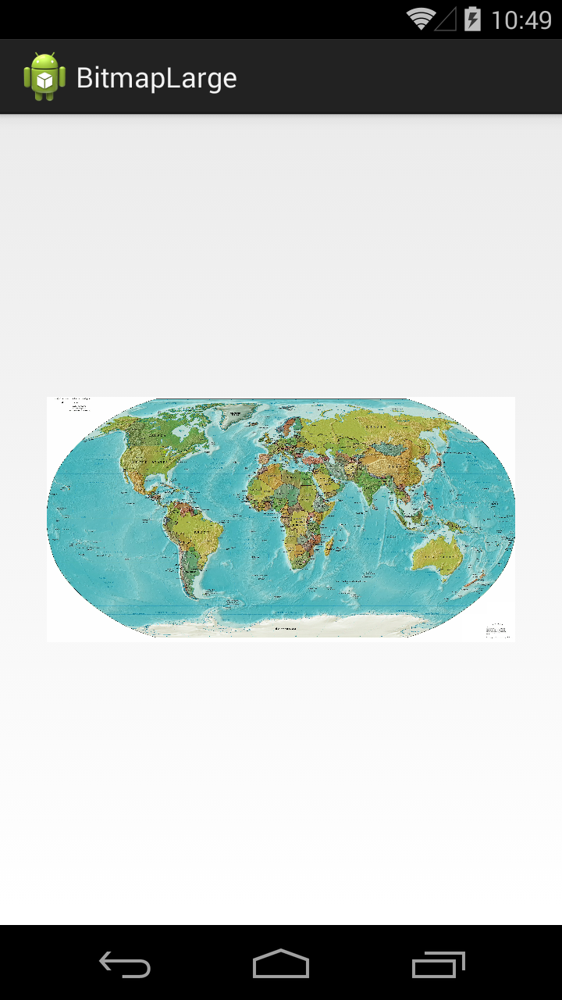

В этом уроке:
- читаем и отображаем большие изображения
Когда мы читаем изображение с SD-карты в Bitmap, оно в памяти занимает значительно больше, чем размер файла на SD. Потому что на диске оно хранится в сжатом JPG или PNG формате. А мы при чтении его распаковываем и получаем полновесный Bitmap.
Для примера возьмем изображение размером 5712х2986. Нам необходимо отобразить его в приложении.
Создадим проект:
Project name: P1601_BitmapLarge
Build Target: Android 4.4
Application name: BitmapLarge
Package name: ru.startandroid.develop.p1601bitmaplarge
Create Activity: MainActivity
res/values/dimens.xml:
<?xml version="1.0" encoding="utf-8"?>
<resources>
<dimen name="image_size">300dp</dimen>
</resources>res/layout/main.xml:
<?xml version="1.0" encoding="utf-8"?>
<RelativeLayout
xmlns:android="http://schemas.android.com/apk/res/android"
xmlns:tools="http://schemas.android.com/tools"
android:layout_width="match_parent"
android:layout_height="match_parent">
<ImageView
android:id="@+id/imageView"
android:layout_width="@dimen/image_size"
android:layout_height="@dimen/image_size"
android:layout_centerInParent="true">
</ImageView>
</RelativeLayout>На экране только ImageView размером в 300dp
MainActivity.java:
package ru.startandroid.develop.p1601bitmaplarge;
import java.io.File;
import android.app.Activity;
import android.graphics.Bitmap;
import android.graphics.BitmapFactory;
import android.os.Bundle;
import android.os.Environment;
import android.util.Log;
import android.widget.ImageView;
public class MainActivity extends Activity {
ImageView mImageView;
@Override
protected void onCreate(Bundle savedInstanceState) {
super.onCreate(savedInstanceState);
setContentView(R.layout.main);
mImageView = (ImageView) findViewById(R.id.imageView);
logMemory();
readImage();
logMemory();
}
private void readImage() {
File file = new File(Environment.
getExternalStoragePublicDirectory(Environment.DIRECTORY_DOWNLOADS),"map.jpg");
Bitmap bitmap = BitmapFactory.decodeFile(file.getAbsolutePath());
Log.d("log", String.format("bitmap size = %sx%s, byteCount = %s",
bitmap.getWidth(), bitmap.getHeight(),
(int) (bitmap.getByteCount() / 1024)));
mImageView.setImageBitmap(bitmap);
}
private void logMemory() {
Log.i("log", String.format("Total memory = %s",
(int) (Runtime.getRuntime().totalMemory() / 1024)));
}
}Метод readImage – читает Bitmap из файла и отображает его в ImageView.
Метод logMemory показывает сколько КБ памяти занимает наше приложение. Будем вызывать этот метод до и после отображения, чтобы увидеть сколько памяти заняла картинка.
В папку Download на вашем девайсе или эмуляторе закиньте файл map.jpg.
Запускаем:

Смотрим лог:
Total memory = 3184
bitmap size = 5712x2986, byteCount = 66625
Total memory = 69832
Впечатляет! Наше изображение заняло в памяти 66 мегабайт! Т.е. чтобы на экране отобразить изображение размером 300dp, мы держим в памяти изображение размером 5712х2986 и весит оно 66 мегабайт. Крайне неудачная реализация. А уж если придется выводить на экран несколько таких картинок, то OutOfMemory нам не избежать.
Надо картинку срочно уменьшать до необходимых нам размеров. Какие тут есть варианты?
Можно, например, ее читать так же, как мы это делаем сейчас, а перед тем, как помещать ее в ImageView, вызывать метод createScaledBitmap (Урок 158), чтобы привести к нужному размеру. В принципе, конечно, получится то, что надо. Но все равно в какой-то момент приложение займет в памяти эти 66 метров, чтобы получить оригинальную картинку. А значит, мы все равно можем словить OutOfMemory, если у нас с памятью напряги.
Тут нам помогут два параметра BitmapFactory.Options:
inJustDecodeBounds – поможет нам узнать размер изображения, не занимая память
inSampleSize – при чтении изображения уменьшит его размер в требуемое кол-во раз, и на выходе мы получим уже уменьшенную копию, что значительно сэкономит нам память. Этот коэффициент должен быть кратным двум.
Подробнее про эти параметры можно прочесть в Уроке 159.
Т.е. алгоритм таков:
- выясняем размер изображения
- определяем во сколько раз надо его уменьшить, чтобы получить нужный нам размер
- читаем его, сразу уменьшая до нужных нам размеров
Документация Google любезно предоставляет нам готовые методы с реализацией этого алгоритма.
Скопируем их оттуда в MainActivity.java, немного изменив, чтобы они читали файл не из ресурсов, а с SD:
public static Bitmap decodeSampledBitmapFromResource(String path,
int reqWidth, int reqHeight) {
// Читаем с inJustDecodeBounds=true для определения размеров
final BitmapFactory.Options options = new BitmapFactory.Options();
options.inJustDecodeBounds = true;
BitmapFactory.decodeFile(path, options);
// Вычисляем inSampleSize
options.inSampleSize = calculateInSampleSize(options, reqWidth,
reqHeight);
// Читаем с использованием inSampleSize коэффициента
options.inJustDecodeBounds = false;
return BitmapFactory.decodeFile(path, options);
}
public static int calculateInSampleSize(BitmapFactory.Options options,
int reqWidth, int reqHeight) {
// Реальные размеры изображения
final int height = options.outHeight;
final int width = options.outWidth;
int inSampleSize = 1;
if (height > reqHeight || width > reqWidth) {
final int halfHeight = height / 2;
final int halfWidth = width / 2;
// Вычисляем наибольший inSampleSize, который будет кратным двум
// и оставит полученные размеры больше, чем требуемые
while ((halfHeight / inSampleSize) > reqHeight
&& (halfWidth / inSampleSize) > reqWidth) {
inSampleSize *= 2;
}
}
return inSampleSize;
}В методе decodeSampledBitmapFromResource мы просто читаем изображение с включенным inJustDecodeBounds. Тем самым, в options помещаются данные о размере изображения, но само изображение не читается. Собственно, тут-то мы и экономим 66 метров. Далее объект options с данными о размере изображения мы передаем в метод calculateInSampleSize. А также передаем туда ширину и высоту изображения, которые нам нужно получить на выходе. Метод calculateInSampleSize вычисляет (и помещает в inSampleSize) коэффициент уменьшения изображения. Далее мы отключаем inJustDecodeBounds и получаем bitmap, который будет уменьшен до необходимых нам размеров.
Метод calculateInSampleSize на вход получает объект options, который содержит данные о реальном размере изображения. Также на вход идут reqWidth и reqHeight, в которые мы передаем желаемые нам размеры изображения.
Сначала метод проверяет, что реальные размеры изображения больше требуемых нам. Затем начинает подгонять коэффициент. Для этого он вычисляет половину ширины и высоты изображения, делит их на коэффициент и проверяет, что результат влезает в требуемые нами размеры. Если не влезает, то коэффициент увеличивается на два и снова идет проверка. Этот цикл выполняется пока половина ширины и высоты изображения, поделенные на коэффициент не влезут в требуемые нами размеры.
Либо можно трактовать логику чуть по-другому. Цикл находит нам коэффициент, использование которого даст нам размер, который вместится в требуемый. А мы потом этот коэффициент откатываем на шаг назад, чтобы получить размер, который будет чуть больше требуемого.
В результате этот метод определит нам коэффициент так, чтобы изображение получилось максимально близко к требуемым размерам, но было бы больше их, а не меньше. Размер должен получится больше требуемого, чтобы не потерять в качестве изображения при отображении. Меньшее изображение пришлось бы растягивать, а это скажется на качестве.
Получить точно требуемые нам размеры мы не сможем, т.к. коэффициент должен быть кратным двум.
Перепишем метод readImage с использованием этих методов:
private void readImage() {
int px = getResources().getDimensionPixelSize(R.dimen.image_size);
File file = new File(Environment.
getExternalStoragePublicDirectory(Environment.DIRECTORY_DOWNLOADS),"map.jpg");
Bitmap bitmap = decodeSampledBitmapFromResource(file.getAbsolutePath(), px, px);
Log.d("log", String.format("Required size = %s, bitmap size = %sx%s, byteCount = %s",
px, bitmap.getWidth(), bitmap.getHeight(), bitmap.getByteCount()));
mImageView.setImageBitmap(bitmap);
}Запускаем, смотрим лог:
Total memory = 3204
Required size = 600, bitmap size = 1428x747, byteCount = 4166
Total memory = 7412
Стало значительно лучше. С учетом density наш ImageView имеет размер 600 px. И при чтении изображения был учтен этот размер. Теперь в памяти изображение размером 1428х747 и весом в 4 мегабайта. Это вполне приемлемый результат.
Кстати, если не очень понятен алгоритм метода calculateInSampleSize, то возьмите реальные цифры и попробуйте сами на бумажке по шагам все посчитать. Исходный размер был 5712х2986, а требуемый размер – 600х600.
Итак, мы получили 4 мегабайта вместо 66. Но этот результат можно еще немного улучшить. Нашему изображению не нужна прозрачность. Поэтому мы можем использовать RGB_565 конфигурацию вместо дефолтовой ARGB_8888. Это уменьшит вес bitmap еще в два раза (Урок 157).
В метод decodeSampledBitmapFromResource добавим перед return следующую строку:
options.inPreferredConfig = Bitmap.Config.RGB_565;Запускаем, смотрим лог:
Total memory = 3172
Required size = 600, bitmap size = 1428x747, byteCount = 2083
Total memory = 5296
Стало еще лучше, всего 2 мегабайта вместо 66, а результат визуально тот же самый.
В принципе, можно еще и createScaledBitmap применить, чтобы получить уж совсем необходимый вам размер. Это может еще раза в два снизить вес Bitmap.
Если мы теперь, например, уменьшим размер ImageView до 100 dp, то получим такие данные в логе:
Total memory = 3176
Required size = 200, bitmap size = 714x374, byteCount = 521
Total memory = 3740
Изображение весит уже пол-мегабайта всего, а размер = 714х374.
И напоследок пара важных замечаний.
Если вы пишете, например, приложение - графический редактор, то ему реально нужно будет много памяти. В этом случае можно в манифесте в тег <application> добавить параметр largeHeap="true". Вашему приложению будет выделено памяти больше, чем обычно. Но это должно быть реально последним средством перед которым вы оптимизировали все, что можно. Не стоит злоупотреблять этим параметром и включать его просто, чтобы быстро избавиться от OutOfMemory.
Обратите внимание на разницу во времени логов, которые у нас получались в приложении. Видно, что декодирование изображения может занять от нескольких сотен мсек. до нескольких секунд. Это слишком большая длительность для выполнения операции в основном потоке. Если на экран требуется выводить несколько таких картинок, то задержка UI будет весьма ощутима. Поэтому декодирование рекомендуется проводить в отдельном потоке. AsyncTask (Урок 86) и AsyncTaskLoader (Урок 135) вам в помощь.